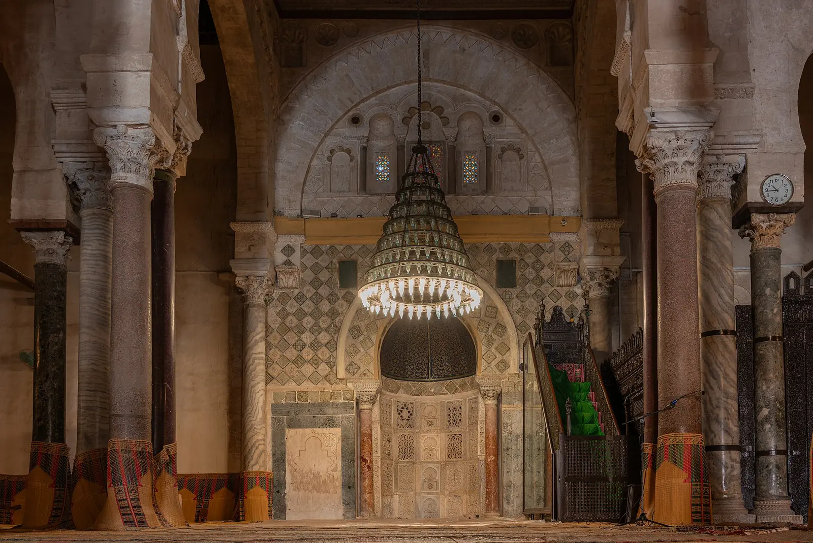
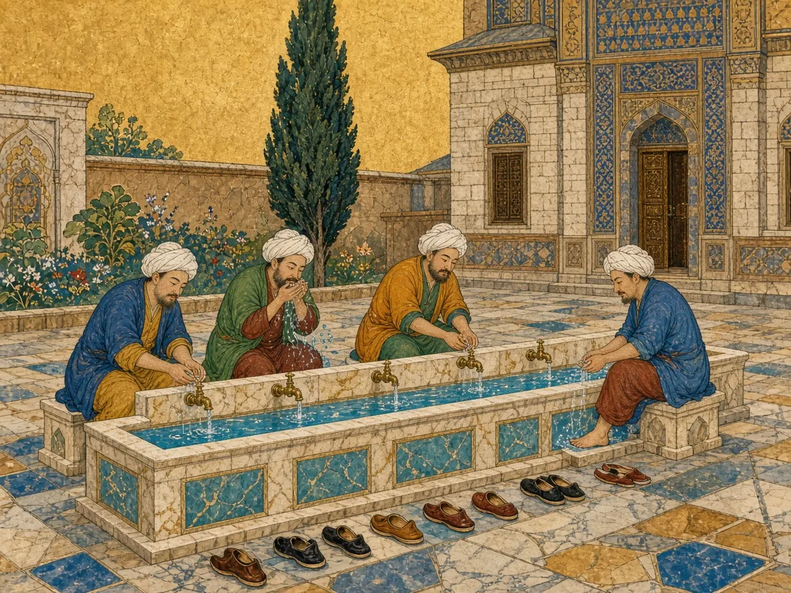
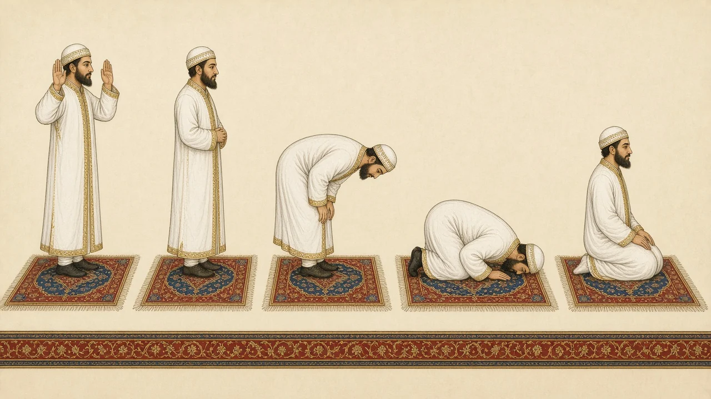
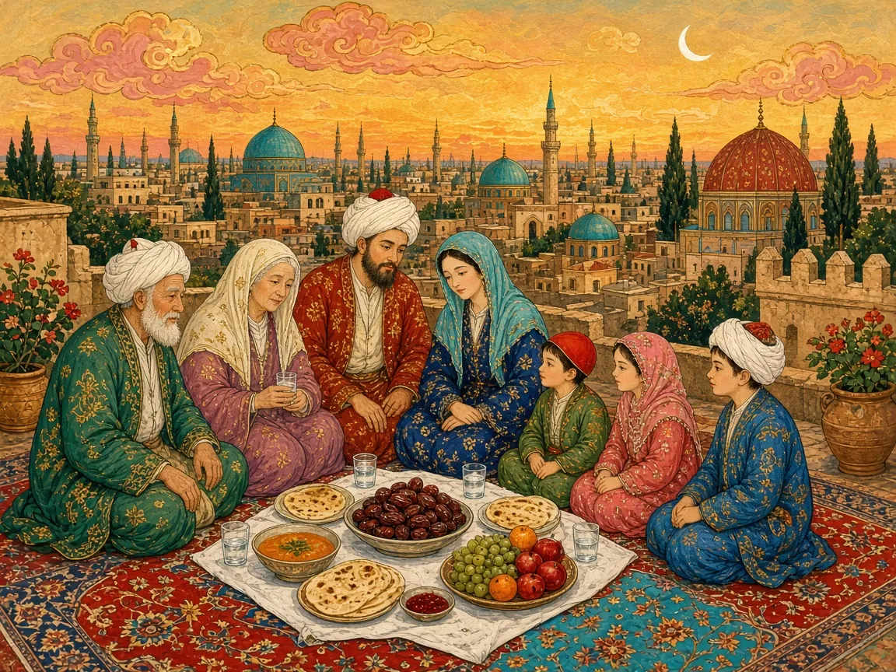
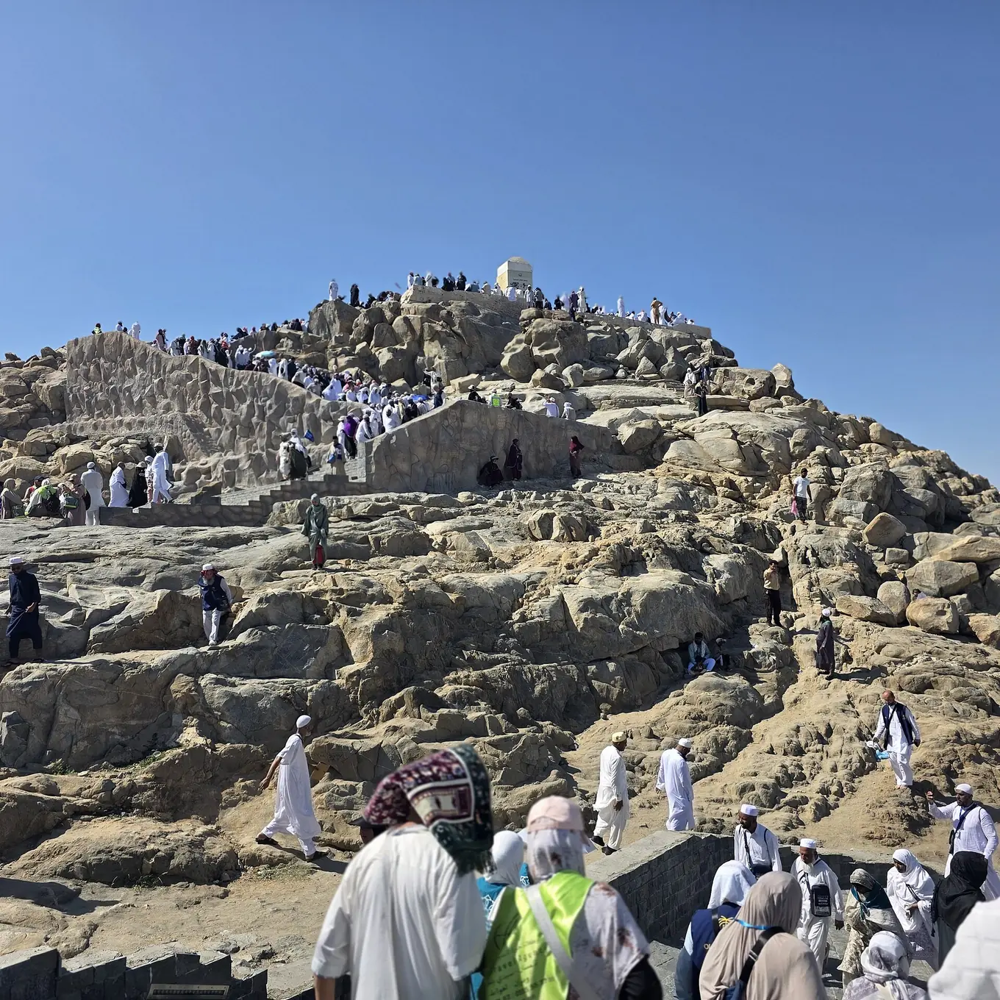
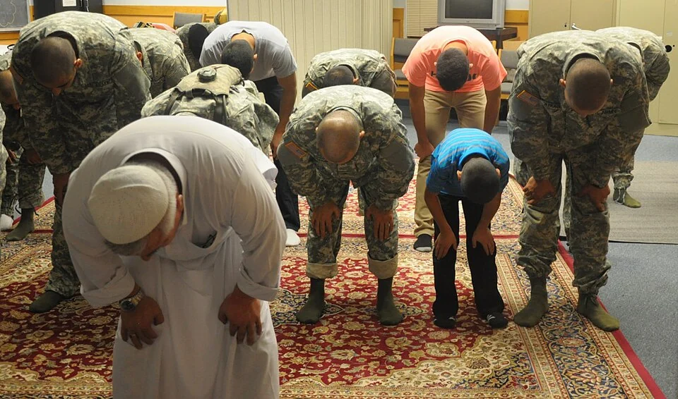

Dearborn, Michigan · p. 315
Fasting Among the Fryers

- Dearborn has one of the largest Muslim populations in North America
- Hussein Elhaf works in his family’s restaurant all through Ramadan
- He eats and drinks only between sunset and sunrise; after sunset the restaurant is packed until 11 P.M.
- “It strengthens my faith and brings me closer to God”
p. 316
What Makes a Pillar?
1. Shahada
Confession of faith
2. Salat
Prayer five times a day
3. Sawm
Fasting in Ramadan
4. Zakat
Almsgiving
5. Hajj
Pilgrimage to Mecca
- The idea of “pillars” is not in the Qur’an or hadith, but Muslims see it as faithful to them
- Essential but not exhaustive; Shi‘as generally recognize ten
Pillar 1 · p. 316
La ilaha illa Allah
La ilaha illa Allah, Muhammad rasul Allah.
“There is no god but God, and Muhammad is God’s prophet.”
First half
Any monotheist can say it sincerely.
Second half
Connects monotheism to Islam: submission to all God’s commandments given through Muhammad, the final messenger.
A whole life
Whispered to newborns; said by converts; repeated in every prayer; the last words of the dying.
Pillar 2: Prayer · pp. 316–317
The Call to Prayer
God is great. [4 times] / I bear witness that there is no god but God. [2] / I bear witness that Muhammad is the prophet of God. [2] / Make haste to prayer. [2] / Make haste to success. [2] / God is great. [2] / There is no god but God. [1]
The most common pattern of the call, p. 317
- A mosque (masjid, “place of prostration”) has a tower, the minaret
- The muezzin chants the call, today often by loudspeaker (photo)

p. 317
Inside the Prayer Hall
- An open room, often with abstract decoration; no pictures, statues, incense, altars, or sanctuary
- Remove shoes and wash; stand in straight lines facing the niche that shows the qiblah, the direction of Mecca
- Straight rows show the equality of all people before God
- A pulpit for the Friday sermon; Qur’ans on wooden stands

p. 317
Clean Before God

- Hands, feet, eyes, ears, nose, and mouth are rinsed three times
- Women pray out of men’s sight, behind them or in a separate room
- The reason given: the dignity of women during bowing and prostration
- A man who touches a woman in the mosque, even by accident, must wash again
Review Question 9 · pp. 316–317
Salat, Step by Step

- Five times a day: sunrise, noon, midafternoon, sunset, one hour after sunset
- A formal ritual of postures and recitation, led by the imam; no spontaneous personal prayer
- Stand and raise the hands to the ears; recite al-Fatihah and other set words
- Bow, stand, kneel, prostrate with forehead to the ground, kneel, prostrate, stand
- Five to ten minutes
p. 317–318
Friday Noon
- On Friday the noon prayer is held in the mosque with a sermon by the imam
- Usually the best-attended service of the week: 30 to 60 minutes
- In 2011, crowds poured out of Friday noon prayers to begin the Arab Spring protests

Chapter 12 Review Questions
Checkpoint: Review Question 9
Review Question 9 · Checkpoint
What happens during the ritual prayer known as salat?
- Find the two anchor sentences (p. 316, “Each observant Muslim…”; p. 317, “Salat is a formal ritual…”)
- Before: the call, washing, shoes off, rows facing the qiblah; women apart
- During: set words and postures, led by the imam, in unison
- Review: Call, Washing, Step by Step, Friday
Pillar 3 · p. 318
Sawm: The Ramadan Fast

- In commemoration of the giving of the Qur’an: no food, drink, sex, or smoking in daylight throughout Ramadan
- Designed to cultivate greater submission to God
- Humane: children, the sick, the old, and soldiers on duty are excused or fast later; charity can substitute
- Ends with Eid al-Fitr: a special mosque service, family feasts, and gifts
Pillar 4 · Review Question 10 · p. 318
Zakat: 2.5 Percent
- The Qur’an urges generosity to the poor, orphans, and widows (e.g., 2:43); the Shari‘a made it a formal obligation
- One-fortieth (2.5 percent) of the value of one’s assets, not counting homes, animals, vehicles, or clothing
- Usually collected by a representative of the umma, often the government; given to the poor, widows, orphans, stranded travelers
- In Europe and North America: voluntary giving through mosques or Islamic charities

Review Question 10 · p. 318
Zakat and Social Justice
“Zakat has provided Islamic countries with the resources for comprehensive programs of social support and development that are unique among world religions and reinforce solidarity among Muslims of different classes.”
Large sums
Because every observant Muslim gives, zakat generates large sums worldwide.
Solidarity
It binds rich and poor in one community, the umma.
Justice
It is the principal way Muslim lands promote a fuller social justice.
Chapter 12 Review Questions
Checkpoint: Review Question 10
Review Question 10 · Checkpoint
Why is zakat an important pillar of the Muslim faith?
- Find the two anchor sentences on p. 318 (“The Shari‘a made…” and “Zakat has provided…”)
- Define it: 2.5 percent of assets, exclusions, who collects and receives
- Explain why: scale, solidarity, social justice; roots in Muhammad’s preaching
- Review: Zakat: 2.5 Percent and Zakat and Social Justice
Pillar 5 · p. 318
Hajj: Who, When, Where
- Every Muslim, man or woman, at least once in a lifetime; traditionally most pilgrims are men
- Imposed humanely: one who cannot go may send someone else on his or her behalf
- Only in the month of al-Hajj; a visit at other times is not a hajj
- Muhammad first had his followers pray toward Jerusalem, then made Mecca and the Kaaba the center

“Your Visit to Mecca,” p. 291
Your Visit, Part I: Mecca
- Arrive clean: men shave the head and wear two pieces of white cloth; women bathe and dress modestly
- Circle the Kaaba seven times; touch the sacred black stone
- Run seven times between two hills, as Hagar did, then drink from the Zamzam well
- Every race and nation, rich and poor, dressed alike
“Your Visit to Mecca,” p. 291
Your Visit, Part II: Arafat and Mina

Arafat
Stand near the Mount of Mercy from the afternoon to the sunset prayer: prayer, meditation, Qur’an.
Mina
Three days in a huge tent city; sheep and goats sacrificed and eaten, recalling Abraham and Ishmael.
The pillars
Throw small stones at three pillars representing the devil: rejecting evil, a lifelong task.
Mecca again
Walk in the Grand Mosque one more time; the pilgrimage is complete.
p. 319
Coming Home a Hajji
“Creating a global community seems less daunting after making a pilgrimage, especially one that stirs us, physically and spiritually, in a single pot with all humanity.”
Robert Bianchi, who made the hajj as a Muslim, p. 319
- A man who has made the hajj receives an honorary name, Hajji, “Pilgrim”
- Secondary pilgrimage sites: Medina, the Dome of the Rock; for Shi‘as, Qom and Karbala
Check Yourself
Check Yourself: The Five Pillars
Why is “There is no god but God” a better translation than “no god but Allah”?
In Arabic the second and fourth words are both Allah, the ordinary word for God (p. 316).
Name the five times of salat.
Sunrise, noon, midafternoon, sunset, and one hour after sunset (p. 316).
What is the qiblah?
The direction of Mecca, marked by a niche at the front of the prayer hall (p. 317).
How much is zakat?
One-fortieth, 2.5 percent, of one’s assets, not counting homes, animals, vehicles, clothing (p. 318).
What festival ends Ramadan?
Eid al-Fitr (p. 318).
What do the three pillars at Mina represent?
The devil; stoning them means rejecting evil (p. 291).
Required Study · pp. 319–320
The Muslim Funeral, I: Washing and Shrouding
- At death: close the eyes and mouth, cover the body, pray for forgiveness of sins
- Bury as soon as possible; no autopsy or cremation; no embalming unless the law requires it
- Same-sex close family wash the body three times; women’s hair is washed and braided
- Three white sheets, hands placed as in prayer, tied with ropes
Required Study · p. 320
The Muslim Funeral, II: Prayer and Burial
Prayers
In a side room, a study room, or outside the mosque, not in the main hall.
Burial
Traditionally only men attend, though some communities allow all mourners.
The grave
Body on its right side, facing the qiblah; wood or stones above it, then handfuls of soil.
No monument
A small stone or marker may be placed; a large monument or elaborate decoration is prohibited.
Mourning
The family receives visitors; the community brings food; mourning customarily lasts forty days.
Required Study · p. 318
Ramadan’s Moving Calendar
- The Muslim calendar is lunar, with no leap days, so Ramadan moves through the seasons
- Winter: comparatively easy. Summer: long, hot days, and most Muslims live in tropical or subtropical lands
- Hunger can be a challenge to learning; soldiers on duty may fast later
Outside the textbook: a lunar year is about 354 days, so Ramadan begins about 11 days earlier each year. Ramadan 1448 AH is expected to begin about February 8, 2027 (the exact day depends on the moon).

Required Study · pp. 302, 316
Shi‘a Practice: Ten Obligations
The chapter defines the Five Pillars as Sunni practice (p. 316) and says Shi‘as have “five additional pillars” (p. 302). Twelver Shi‘a teaching usually lists ten “branches of religion” (furu‘ al-din):
| Shared with the Sunni pillars | The | Shared with Sunnis | Distinctively Shi‘a emphasis | ldquo;second group of fiveShared with Sunnis | Distinctively Shi‘a emphasis | rdquo; (p. 316)
|---|---|---|---|---|---|
| Prayer (salat) | Khums: one-fifth of surplus income | ||||
| Fasting (sawm) | Jihad: struggle | ||||
| Zakat | Enjoining good and forbidding evil | ||||
| Hajj | Tawalla: love for the Prophet’s family | ||||
| Tabarra: dissociation from their enemies |
Outside the textbook: the chapter does not list them; this list comes from Twelver teaching. The shahada is treated as part of belief, not a branch.
Required Study · pp. 291, 319
Safety at the Hajj

- The textbook: deadly stampedes, “most recently in 2015”; occasional Sunni–Shi‘a violence
| Year | Event (outside the textbook) |
|---|---|
| 1987 | Clash between Iranian demonstrators and Saudi police; more than 400 dead |
| 2015 | Crane collapse at the Grand Mosque kills 111; crush at Mina: Saudi count 769, AP count about 2,400 |
| 2024 | Extreme heat: 1,301 pilgrims die, most of them unregistered |
Required Study · p. 324
Zakat Under Suspicion
- The U.S. government has investigated Muslim charities that send funds abroad, some of it zakat
- The textbook: some funds have gone into “the shadowy network of terror,” but “the vast majority of funds do not”
- Many American Muslims see this as interference with a pillar of their religion
Outside the textbook: the Holy Land Foundation, once the largest U.S. Muslim charity, had its assets frozen in December 2001; its leaders were convicted in 2008 of funding Hamas.

Required Study · pp. 316–319
The Five Pillars at a Glance
| Pillar | What | When / how much | Key detail |
|---|---|---|---|
| Shahada | Confession of faith | Birth, conversion, every prayer, death | “There is no god but God, and Muhammad is God’s prophet” |
| Salat | Ritual prayer | Five times a day; Friday noon in the mosque | Washing, qiblah, set postures, imam leads |
| Sawm | Fasting | Daylight hours, month of Ramadan | Humane exemptions; ends with Eid al-Fitr |
| Zakat | Almsgiving | 2.5 percent of assets | Social support and solidarity |
| Hajj | Pilgrimage to Mecca | Once in a lifetime, month of al-Hajj | Kaaba, Arafat, Mina; title Hajji |